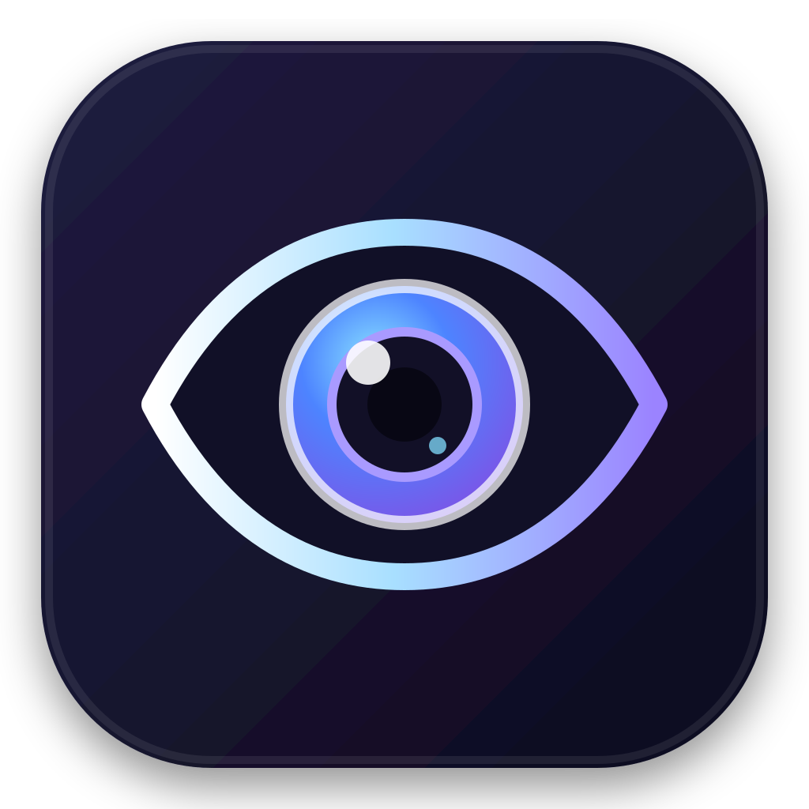
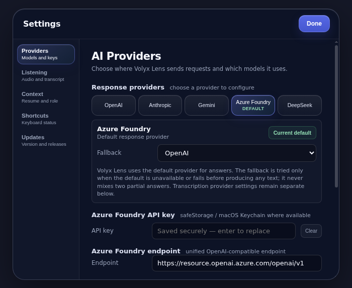

01
Pick a screen
Choose the display that contains the work you want help with. Screenshots are attached only when your request uses screen context.

Volyx LensPrivate context assistantfor macOS
Volyx Lens brings your screen, voice, and meeting audio into one compact assistant. Select the inputs you need, choose your AI provider, and keep control of the route.
Free public test release. macOS 13+, Apple Silicon and Intel. Bring your own provider key.
Context, on your terms
Volyx Lens separates context into explicit inputs. Turn on only what the task calls for, then see the active combination before you send a prompt.
Choose the display that contains the work you want help with. Screenshots are attached only when your request uses screen context.
Speak naturally instead of switching windows to type. The microphone is a separate input with its own visible state.
Bring in the other side of a call for meeting or interview context. System audio stays optional and independent.
A route you can inspect
Volyx Lens sends selected context directly from the app to the AI provider you configure. There is no Volyx Lens-operated intermediary server in that request path.
Your chosen AI provider still receives the context you send and applies its own retention and privacy terms. Review those terms before sharing sensitive material.
Built for the edge of your workspace
The floating rail can move around your desktop. Expand it into chat, choose the context for the moment, then collapse it back out of the way.

One assistant, different context
Ask about an error, a dense document, a dashboard, or an unfamiliar interface without restating every visible detail.
Talk through a problem while the relevant screen stays attached to the conversation. Useful when typing would break your flow.
Use microphone and system audio for contextual assistance during a meeting or interview, where permitted and with participant consent.
Bring your own model access
Configure the provider that fits your work. Model availability and charges come from that provider, not Volyx Lens.
Try the public test build
Version 0.3.1 is an ad-hoc signed test build for Apple Silicon and Intel Macs. It is not notarized, and first launch requires the documented macOS approval steps.
Built with boundaries
Capture permissions are explicit, but local consent and recording laws still apply. Do not capture private conversations, protected work, exams, or interviews when you lack permission.
Capture evasion is best-effort only. Do not treat it as guaranteed invisibility or use it to bypass disclosure, supervision, proctoring, or security controls.
Source code is available under the PolyForm Noncommercial 1.0.0 license. Commercial use requires separate permission.
Before you install
No. You configure your own supported provider. Requests travel from the desktop app to that provider, and the provider's own data terms apply.
The app stores provider credentials in the macOS Keychain. The settings screen lets you update or remove them.
No. Version 0.3.1 is ad-hoc signed. Follow the repository's first-launch instructions and verify the published checksum before opening it.
The public source is licensed under PolyForm Noncommercial 1.0.0. Contact the owner if your intended use falls outside that license.